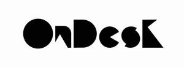

Trade Mark Journal No.2025/043 24 October 2025
UK00004279068 16 October 2025 (3,25)

- Class 3
- Artificial nails; False nails; Nails (False -); Glue for strengthening nails; Nail polish; Adhesives for false eyelashes, hair and nails; Nail glitter; Nail strengtheners; Adhesives for artificial nails; Lotions for strengthening the nails; Nail polish pens; Nail varnish; Varnish (Nail -); Nail enamel; Nail varnishes; Adhesives for fixing false nails; Nail paint [cosmetics]; Nail enamels; Nail polish removers; Nail makeup; Preparations for reinforcing the nails; Adhesives for affixing false nails; Nail polish remover pens; Nail cosmetics; Nail polish remover; Preparations for removing gel nails; Nail enamel removers; Nail polish removers [cosmetics]; Nail tips; Nail gel; Nail enamel remover; Nail hardeners; Nail varnish removers; Nail polish base coat; Nail tips [cosmetics]; Nail polish top coat; Nail whiteners; Nail hardeners [cosmetics]; Nail buffing preparations; Nail varnish remover [cosmetics]; Nail conditioners; Nail primer [cosmetics]; Gel nail removers; Nail polishing powder; Nail base coat [cosmetics]; Nail varnish removing preparations; Artificial fingernails; Powder for forming sculpted finger nail tips; Abrasive boards for use on fingernails; Decalcomanias for fingernails; Abrasive emery paper for use on fingernails; False fingernails; Nail varnish for cosmetic purposes; Nail cream; Artificial nails for cosmetic purposes; Abrasive paper for use on the fingernails; Adhesives for affixing artificial fingernails; Fingernail decals; False toenails; Skin, eye and nail care preparations; Nail repair preparations; Cosmetic preparations for nail drying; Cosmetic nail preparations; Nail decolorants; Fingernail tips; Polish; Nail care preparations; Nail art stickers; Polishes; Artificial fingernails of precious metal; Dressings for nail reconstruction; Cosmetic nail care preparations.
- Class 25
- Clothing; Knitwear [clothing]; Jackets [clothing]; Ready-to-wear clothing; Woolen clothing; Furs [clothing]; Layettes [clothing]; Clothing layettes; Linen clothing; Headbands [clothing]; Headbands for clothing; Gloves [clothing]; Gloves as clothing; Clothes; Aprons [clothing]; Kerchiefs [clothing]; Jerseys [clothing]; Denims [clothing]; Shorts [clothing]; Cashmere clothing; Capes (clothing); Oilskins [clothing]; Gabardines [clothing]; Silk clothing; Leather clothing; Clothing of leather; Leather (Clothing of -); Collars [clothing]; Parts of clothing, footwear and headgear; Veils [clothing]; Knitted clothing; Windproof clothing; Hoods [clothing]; Corsets [clothing, foundation garments]; Embroidered clothing; Wristbands [clothing]; Belts [clothing]; Belts for clothing; Bandeaux [clothing]; Rainproof clothing; Waterproof clothing; Casual clothing; Visors [clothing]; Jackets being sports clothing; Jackets (Stuff -) [clothing]; Stuff jackets [clothing]; Bottoms [clothing]; Playsuits [clothing]; Clothing for leisure wear; Ready-made clothing; Latex clothing; Trunks being clothing; Woven clothing; Drawers [clothing]; Drawers as clothing; Leisure clothing; Clothing for sports; Sports clothing; Ties [clothing]; Athletic clothing; Clothing for children; Muffs [clothing]; Bodies [clothing]; Tops [clothing]; Clothing for cycling; Weatherproof clothing; Pockets for clothing; Fabric belts [clothing]; Water-resistant clothing; Triathlon clothing; Handwarmers [clothing]; Clothing for skiing; Beach clothing; Thermal clothing; Cowls [clothing]; Chaps (clothing); Men's clothing; Fishing clothing; Braces for clothing; Mitts [clothing]; Dance clothing.
ON DESK LTD